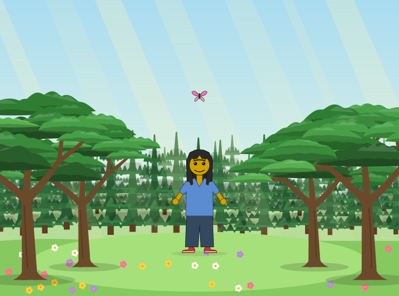
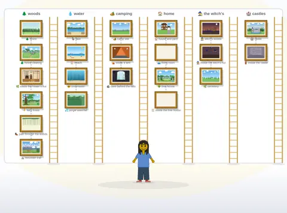

Dress Up reports · ^du_report(3) · 2026-10-16 · about Messed Up Dress Up, a game made with M and N · after ^du_report(2)
Slow until reloaded
Why did Messed Up Dress Up stay slow after the duck pond, in every place, until the page was reloaded (^ticket(167)), and what else builds up in a session of play? Measured the night of 2026-10-16 on 0.0.94, on GitHub's computers: the series' first measurements made there, not on Matthew's laptop.
Short answers. Each figure is one run on one of GitHub's computers (headless Chrome 155 or Firefox 157, no graphics card), so read them against each other, not against a kid's computer (below).
- It was the 🏞️ Background tab, not the pond. With that tab open, the default friend swims the duck pond at 2.4 to 14.9 frames a second (Chrome, two runs); with any of the game's other 15 tabs open, at 60. Places are chosen and set in that tab, so it stays open after a trip to the pond, and every place is slow after; a reload opens the 🧍 Body tab again.
- Every refresh of that tab worked out the whole castle, over and over. While the friend moves, the open tab's controls are refreshed a few times a second. On the Background tab a refresh took about 790 ms (0.5 ms on Body), two thirds of it naming the castle's room choices: for every door and hall end of every castle, each name built the whole castle first. Since 0.0.95 (released 2026-10-17), each name looks up just its room: a refresh takes 25 ms, and the pond swims at 59.3 with the tab open.
- A session keeps a cache, not a leak. After rounds of changes and a forced garbage collection, the page holds about 25,000 to 29,000 more nodes, in 28 to 31 parsed pictures, and 35 to 45 MB: the cache of pictures within pictures, which stops at 40. Our first counts, taken without a collection, looked like a leak (141,904 nodes, 11,775 listeners): most of it was waiting to be collected.
- Firefox still loses frames after a session, for a reason not found yet: 58.5 frames a second fresh, 50.8 after two rounds of changes, against 60 for a control that only swam as long. Not the caches, not the music, not listeners.
- This time a stand-in could tell.
^du_report(2)found the kids' computers' costs in each browser's painting, out of reach of a headless browser. This one is the game's own script, and a headless browser on GitHub shows it at once; 🧪 could not, as it runs from ⚙️ Advanced, never with the Background tab open.
The places that work hardest

^du_report(2) was about: 27 and 22 frames a second on the kids' computers as it was, 58 and 60 as still bitmaps (0.0.93), and where this report's slowdown was first seen. 37 animations move in it here.
^ticket(160); every other place 60).
The pictures move as the game does: they are the game's own drawings, from its picture archive of 2026-10-16 (0.0.90), with their animations. A GitHub computer has no graphics card, so its frame rates sit lower than a laptop's: these places are the hardest to draw, not too slow for a kid's computer.
It was the tab
The question came from Matthew's laptop (0.0.94): a setting changed at the duck pond, and the game was slow there, and everywhere after, until a reload; and earlier from the Ubuntu laptop (Intel i7), where the empty room was as slow as the pond after a visit to it (^ticket(167)). We first looked for what a session leaves behind (below); what answered it was simpler: the default friend swum across the pond for 4 seconds with each of the game's 16 tabs open in turn, a fresh page each time.
| tab open | Chrome, run 1 | Chrome, run 2 | Chrome, fixed | Firefox (relative) |
|---|---|---|---|---|
| Body | 60 | 60 | 60 | 60 |
| Face | 60 | 60 | 60 | 29.8 |
| Eyes | 60 | 60 | 60 | 32.2 |
| Hair | 60 | 60 | 60 | 31.1 |
| Neck, arms & legs | 60 | 60 | 60 | 32 |
| Shirt | 60 | 60 | 60 | 32 |
| Hands | 60 | 60 | 60 | 32.3 |
| Pants | 60 | 60 | 60 | 32.6 |
| Swim & undies | 60 | 60 | 60 | 32.3 |
| Feet | 60 | 60 | 60 | 32.5 |
| Visibility | 60 | 60 | 60 | 32.2 |
| Costume | 60 | 60 | 60 | 31.8 |
| Background | 2.4 | 14.9 | 59.3 | 7.7 |
| Controls | 60 | 60 | 60 | 31.5 |
| Music | – | 60 | 60 | 31.4 |
| Advanced | – | 60 | 60 | 32.1 |
Firefox: the first page load is 60; every page loaded after it in the same headless session runs on a 33 ms beat (about 30 frames a second), so only its column's rows compare with each other: there the Background tab is 7.7 against about 31 (run 39003331635). Run 1 stopped after 14 tabs.
Why only after the pond: the Background tab is where a place is chosen and its settings changed, so it is the tab left open after any trip made from it; the game keeps no open tab across a reload, which opens 🧍 Body. Slow until reloaded, in every place, more in the busy ones.
Every refresh worked out the whole castle
A CPU profile of 4 seconds of swimming with each tab open (run 39002226943): with 🧍 Body, the controls' refresh (settle, a few times a second while the friend moves) ran 15 times for 8 ms in all; with 🏞️ Background, 4 times for 3,162 ms, and the one full refresh (changed) 801 ms. Two thirds of everything sampled was one function: the name of a castle room choice, "dungeon room 4", which found the room's style by building the whole castle (castleOf: every room's exits, flags, residents) for that one name. The Background tab holds a menu of rooms for every door and hall end of every castle, 13 choices each, and every name was worked out afresh on every refresh.
The fix (ffa9c31, released in 0.0.95 on 2026-10-17): a name looks up its room by the same rule the castle's room list follows. With the Background tab open, a refresh now takes 25 ms (15 in 4 s, 372 ms), the pond swims at 59.3, and every tab passes a check that holds the pond at 50 or more with it open (run 39002729428). The 25 ms left, against 0.5 on Body, is the tab's other controls (step 2).
What a session keeps
Before we knew it was the tab, we measured a session: the pond fresh, then after a round of changes (every place visited and walked a moment, trips through the castle's gate, into a pit and up a ladder, 60 changes of sliders, every tab clicked), twice, then after a reload, with what might grow counted.
| Chrome, counted as found | fps | nodes | listeners | heap MB | rAF a frame | timers |
|---|---|---|---|---|---|---|
| fresh | 60 | 9,670 | 135 | 9.7 | 3 | 1 |
| after round 1 | 58.7 | 50,480 | 122 | 74.2 | 5 | 2 |
| after round 2 | 56.2 | 141,904 | 11,775 | 141.0 | 5 | 2 |
| after a reload | 59.8 | 13,955 | 135 | 32.0 | 3 | 1 |
run 38998791340; the game unchanged (0.0.94). These counts include what is waiting to be collected.
It looked like a leak. Counted again after a forced garbage collection (run 39003132453), most of it was garbage: listeners stay at 89 to 104, and what is kept is the cache of pictures within pictures (each a parsed document), at most 40 by design:
| after a collection | nodes | listeners | heap MB | documents | nodes, tabs clicked | listeners | heap MB |
|---|---|---|---|---|---|---|---|
| fresh | 329 | 89 | 2.8 | 1 | 3,302 | 89 | 3.3 |
| after round 1 | 24,442 | 89 | 35.1 | 29 | 24,664 | 104 | 35.3 |
| after round 2 | 29,215 | 89 | 45.4 | 32 | 26,705 | 104 | 35.4 |
What keeps running at an idle pond after a round of changes, counted by the line of the game that asked for it (run 39001495740), per 2 seconds:
| the game's line | before | after |
|---|---|---|
frame@12541 (a tune's note loop) | 0 | 121 |
perfMeterTick@865 (⚙️ Advanced's meter) | 0 | 121 |
treadTick@11313 (treading water) | 0 | 61 |
drawNow@11302 | 0 | 60 |
padPoll@15234 (the controller) | 120 | 121 |
Each is there for a reason: a tune playing sends its notes every frame and every 25 ms; the ⚙️ Advanced tab's meter runs while that tab is open (the round ends on it); a friend in the water treads it. None is left over when its reason goes.
That last is still open (step 3): Chrome loses less (60, 58.7, 56.2) and recovers on a reload (59.8); in Firefox a reload in a headless session runs at 30 on a 33 ms beat, so it cannot show whether a reload helps there.
What this changes in ^du_report(2)
^du_report(2) found that only the kids' computers could show their costs, and that "the game's own work is never the cost" (a drawing takes 1.0 ms everywhere). Both hold for what it measured, the drawing and the painting. This slowdown was the game's own work, though not its drawing: the controls' refresh, which 🧪 never ran, as 🧪 lives on the ⚙️ Advanced tab. A headless browser shows that kind of cost at once, and since this evening every branch of the game is tried on GitHub's computers (^ticket(165): the safety net, the frame-rate gate, the audit of every place, and each branch's own checks), as no test browser runs on Matthew's laptop any more (it froze four times this evening, each time during one).
What we got wrong on the way
- We counted before collecting. 141,904 nodes and 11,775 listeners after two rounds, taken as a leak; after a forced collection, 29,215 and 89.
- Our first count of calls by line named its own wrapper for every call (a stack trace's first frame); it now takes the first frame from the game's page.
- The per-tab test stopped at 14 tabs the first time, missing Music and Advanced; the next asked for a 17th that does not exist, and failed on it.
- Firefox in one headless session runs every page after the first at 30 frames a second: its per-tab numbers are relative only.
What next
- 1. Released in 0.0.95 (2026-10-17). Left: on the kids' computers and in Firefox on Matthew's laptop, the duck pond with the 🏞️ Background tab open.
- 2. The Background tab's refresh, cheaper still: 25 ms against 0.5 on Body, in its other controls' refreshes (lines 13428, 14268 and 14112 on 0.0.94); refresh what changed, or only the controls on screen. Now
^ticket(197). - 3. Find Firefox's lost frames after a session: a fresh Firefox for each case (not a reload, which runs at 30 there), and each part of a round on its own: the places, the trips, the sliders, the tabs. Now
^ticket(198). - 4. Hold every tab at 60 in CI: the per-tab check (
tabs167.mjs) joins the checks every branch runs. - 5. Size the picture cache by memory too, if 35 to 45 MB matters on the iPad: 🧪 could count it on each computer.
How this was put together
Where. GitHub Actions' ubuntu-24.04 computers, through the game's own workflow (.github/workflows/dress-up-tests.yml, ^ticket(165)), on branches that change nothing in the game (ci, diag-167) and on the fix's branch (bgtab-167): Chrome 155.0.8059.39 and Firefox 157.0, headless, muted, no graphics card. The game is 0.0.94 (6e264f9) everywhere but the fix (ffa9c31). Every figure is one run, linked where it is shown.
How. The friend is moved by a fake standard controller (the game's own poll reads it), right then left, 2 seconds each, after a warm-up; frames are counted with requestAnimationFrame, "late" is more than 25 ms apart. At 1203×802 at 1.875× (Matthew's laptop's screen) for the per-tab and session runs. A round of changes is leak167.mjs's churn (Chrome) or leakff.py's (Firefox); counts are Chrome's own (Performance.getMetrics), collected first with HeapProfiler.collectGarbage in leakgc167.mjs; the profile is Chrome's sampling profiler at 0.2 ms (bgprof167.mjs), each function's own time; calls by line wrap requestAnimationFrame, the timers and addEventListener before the game's script runs (diag167.mjs). All are in 003/drivers/.
The data is here twice: embedded in this page (<script type="application/json" id="report-data">, at its end) and as files in 003/data/: runs.json (every number here) and each run's output as a .log. The pictures are the game's picture archive's (dress-up-pictures, 2026/10/16, 0.0.90, 9958ca2), copied into 003/pictures/.